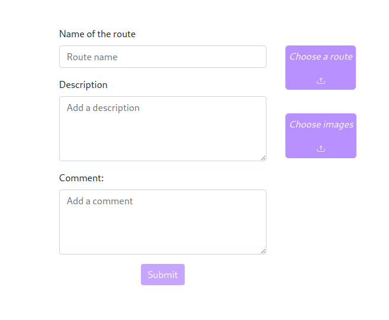
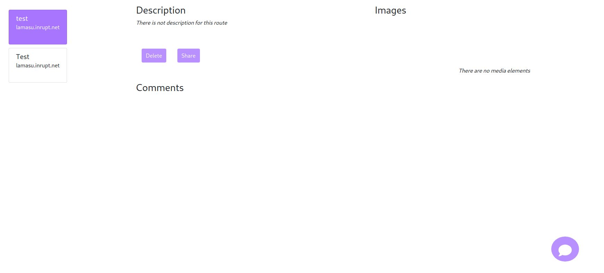
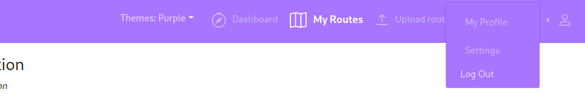
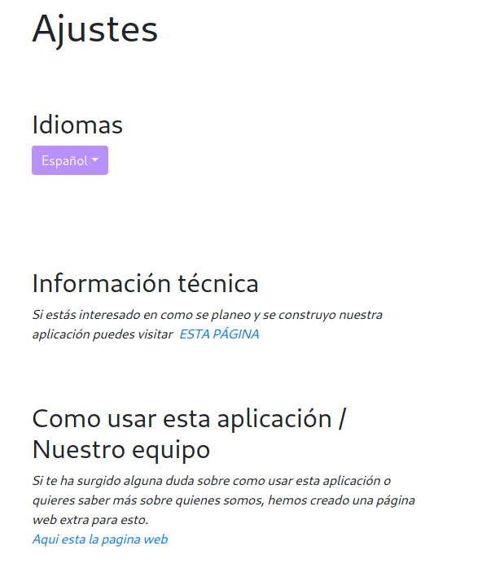

Developer Team

Marcos Álvarez García

César García Cabeza

Íñigo Gutiérrez Fernández

Álvaro García Infante

Pelayo García Álvarez
Eduardo Lamas Suárez
Manual
- What is ViadeApp?
- How to use the ViadeApp?
- Login in Viade
- Adding a route
- Deleting a route
- Sharing a route
- Commenting a route
- Visiting friends profiles
- Checking for notifications
- Changing the theme of the applicaiton
- Changing the language of the webpage
- More details
- FAQ
- What is Solid?
- What is a POD?
- How do I get a POD?
- Why should I care about descentralized technologies?
What is ViadeApp?
ViadeApp is an easy to use web application that helps you managing your routes. With this tool, you are able to add, delete and comment your own routes. Viade is not only a personal route manger for your routes, with our web application you can share your routes amoung your friends.
ViadeApp was create using the Solid technology, with helps securing your personal data in your own POD .
Login in ViadeApp
In order to login the application you need to do the following steps:
- Go to ViadeApp.
- Click on "Login here!", so a new pop up appear.
- In here it only remains to choose a POD provider, where you need to have an account, and introduce you account details.
Adding a route
For adding a new route to ViadeApp you need to follow the next steps, after you are logged:
- Click on "Upload route" in the nav bar.
- Then, you need to full fill the following form. After that click on the "Choose route" button, in order to upload a new route file in gpx format. Also, you are able to upload a picture along with the route. In order to complete this process click on "Submit". 
Deleting a route
- For doing this you need to click on the "My routes" option of the nav bar.
- Once all your routes are loaded, you click on the route that you want to delete.
- Now, it only remains to click on the "Delete" button. 
Sharing a route
- Click on the "My routes" option of the nav bar.
- Once all your routes are loaded, you click on the route that you want to comment.
- Now, it only remains to click on the "Share " button.
- Choose your friend from the friend list that will appear.
Commenting a route
- Click on the "My routes" option of the nav bar.
- Once all your routes are loaded, you click on the route that you want to comment.
- Now, it only remains to click on the "Comment" button.
- A new pop up will appear, where you can write the new comment. When the comment is finished, it only remains to click on "Leave a comment"
Visiting friends progiles
- Click on "My Profile" option of the navbar 
- Once your profile is loaded, you only need to click on the name of your friend.
- From your profile page of the viade app, you are also able to go to your own solid profile by clicking in "Solid profile"
Checking for notifications
- Click on the bell icon of the navbar
- In here you will see every notification that you have. If you click in "Accept all", all the notifications will be deleted
Changing the theme of the page
- In the navbar, click on theme
- Select the theme that you prefer or you need, as some of them will help people with colorblind problems.
Changing the language of the webpage
- In the navbar, click on "Settings
- If you click on "Available Languages", you will see all the possible language options to choose from.
- Once you click on one of them, the page will be reloaded. 
More details
If you want to know more about the application, in a more technical level, you can go HERE.
What is Solid?
Solid is a new technology that wants to change the way we see the internet, by helping with creation of web applications where the user has the control over his personal data.
What is a POD?
A POD is a personal data storage where a user can save all his personal data. In this storage the user has all the power to decide who can and cannot access it. Also, he can change this permission at any moment
How do I get a POD
There is two possibilities:
- You can build the POD in your own server, as it is explain in THIS PAGE. By doing this you have all the control over your data.
- You can obtain it from a POD provider as Inrupt or Solid Community
Why should I care about descentralized technologies?
The most important reason for caring about this, is that in reallity we don'tr really know what the compnaies are doing with our personal information that they have, we only can hope that they are not doing nothing with it. Because of this we should care and promote the descentralized technologies.